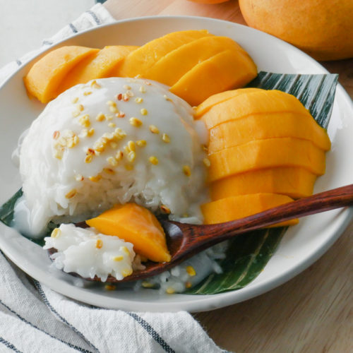

Mango Sticky Rice

Description
Ingredients
- 1 1/2 cups Glutinous Rice
- 400 ml can of coconut milk
- 1/2 cup sugar
- 1/8 tsp plus 1/2 tsp salt
- 1 1/2 tsp cornstarch
- 3 tsp water
- 4 ripe yellow mangos
- Sesame seeds
Directions
- Soak rice in a large bowl with water for 4-8 hours
- After soaking, rinse the rice and add it to a steamer lined with cloth. Cover and steam for 40 minutes or until rice grains are tender.
- While rice is steaming, add coconut milk to a saucepan on medium-low heat.
- Add sugar and 1/8 tsp of salt. Stir until the sugar is dissolved and set aside.
- Reserve 1/2 cup of the sweetened coconut milk mixture and add it to a small saucepan.
- In a small bowl, add cornstarch and water. Stir until cornstarch is dissolved to create a slurry.
- To the reserved coconut milk, add 1/2 tsp of salt and the cornstarch slurry. Whisk on medium-high until thickened. This will be used as a sauce when ready to serve.
- Place steamed rice in a bowl. While the rice is still hot, add the sweetened coconut milk and stir until the coconut milk is fully incorporated. Cover for 15 minutes and allow the rice to absorb the excess liquid.
- In the meantime, peel and slice your yellow mangoes.
- Once the rice is ready, add it to a plate with the sliced mangoes. Pour the thickened coconut sauce on top and finish with toasted mung beans or sesame seeds.